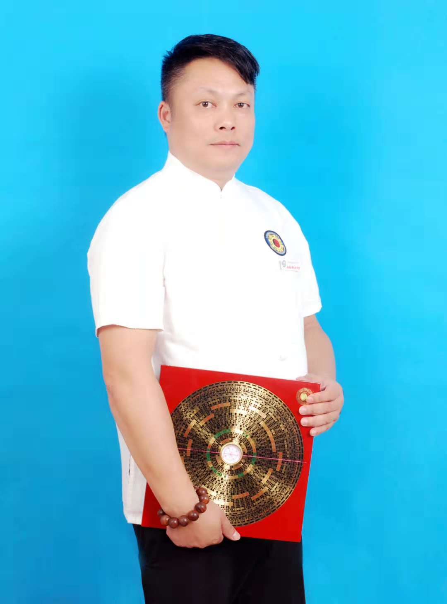
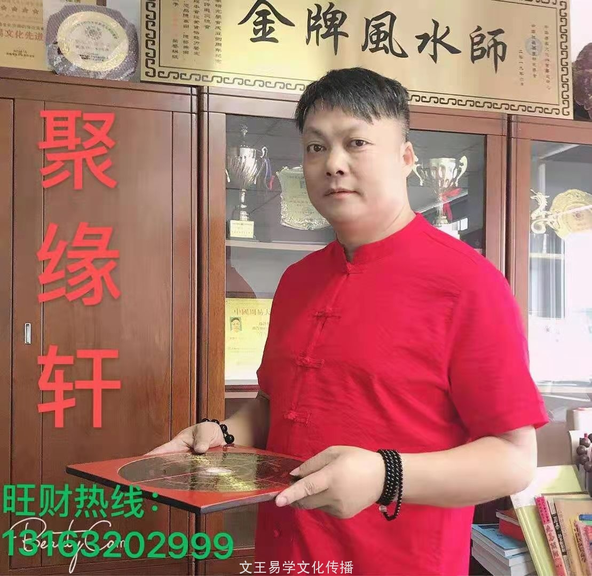
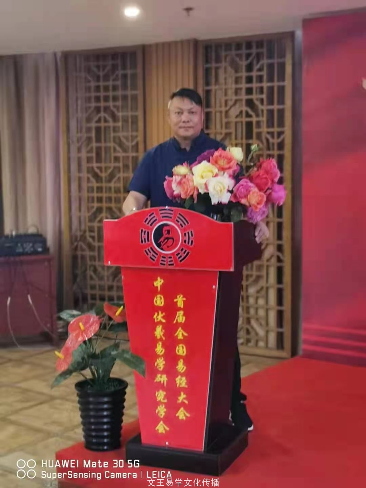
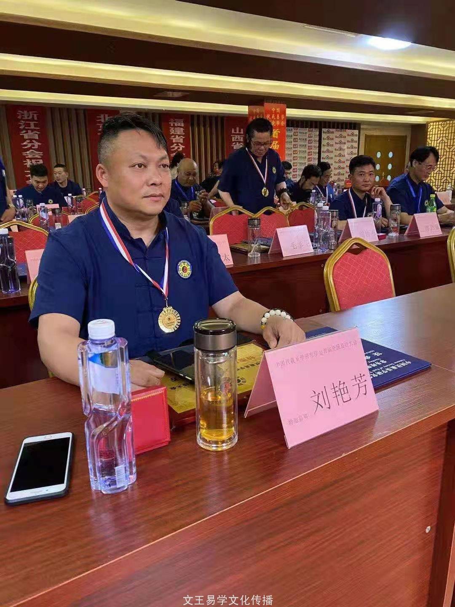

总会荣誉会长-刘艳芳

刘艳芳
祖籍：湖北武汉 一级建筑风水师 中国金牌风水师 中国高级命理师 中国高级风水师 中国金牌择日师 中国金牌起名师 华夏堪舆寻龙名家 中国周易文化权威专家 中国最具影响力易学名师 文王易学文化易学高级讲师 湖北武汉市周易研究中心主任 2020年中国十大杰出预测学人物 武汉易术风水评测（聚缘轩）创始人 中国伏羲易学研究学会总会荣誉会长
祖传四代职业风水师，先祖是形势派风水祖师杨筠松门派之弟子，特别是其爷爷在当时云南，广西，广东，江西，湖北，贵州等地以其独特的风水术为广大人民化煞解难，指点迷津，深得广大客户的好评，并送其美名“刘眼镜”。
刘艳芳，自小出生在风水世家，幼承祖训，深得其父的家传风水术，及周易预测，命理学，并长年在外寻师访友，走偏大江南北，名山大川，寻龙点穴，学习博取各流派之长，去其糟粕，取其精华，古今相结合，以祖传风水法术与现代城市楼盘相结合，总结出了一套自己创新的现代实用风水术，以独特的见解，不拘一格的创新，理论结合实际，经过无数次的现场布局，论证，实战技术为广大客户化煞解难，指点迷津，并得到同行和客户的一致好评。
获得相关证书及编号：
2017年7月获得【中国高级风水师】职称， 2017年7月获得【高级命理风水师】职称， 2017年7月获得【中国高级风水策划师】职称 2017年7月获得【中国周易文化先进工作导师】职称， 2017年7月获得【中国周易大师荣誉称号】职称， 2017年7月获得【一级建筑风水师】职称，
2019年3月获得【当代易学大师奖】” 2019年3月被文王易学文化任命为【荣誉副会长】之职，任期为三年 2019年4月获得【中华金牌择日师】资质 2019年6月被华夏周易文化行业授予：【华夏风水学泰斗】，终身成就荣誉称号 2019年7月被文王易学文化聘为【易学高级讲师】，任期十年。 2019年7月签约山东文王易学文化传媒有限公司【御用风水师】
2019年8月被评为【中国十大杰出预测学人物】 2020年4月荣获【中华风水金罗盘奖】 2020年7月荣获【中国十大杰出风水学人物】 2021年1月荣获【国际华夏易学专家】称号 2021年5月荣获【中国周易大师证书】 2021年5月被文王易学文化首届全国易经大会为【特邀易学名家】 2021年5月任命为文王易学文化【荣誉会长】，任期三年 2021年5月荣获【国际金牌风水师】 2017年8月获得【全国精英德艺双馨命理预测大师】职称 2017年9月获得【中国易学文化优秀导师】 职称 2017年获得2017年度【百位易学名家】职称 2018年元月获得【华夏堪舆寻龙名家奖】 2018年元月获得【全国周易信息预测学专家】职称 2018年获得【中国易学科学家】职称
个人履历：
刘艳芳以继承和发扬中国传统文化为宗旨，进行周易及其易学延伸领域的研究，曾经亲自为以下公司，企业，布局风水，设计方案：
2008年在海南省海口市，亲自为长昌煤矿戆昌新型环保材料有限公司，进行风水选址，布局设计。 2009年在海南省三亚市参与碧海蓝天别墅的选址及风水的布局设计。 2010年在广东省茂名市参与碧桂园的部分风水布局设计。 2011年在湖北省荆门市为大家庄工程进行风水选址，布局设计。 2012年为湖北天宇建筑有限公司荆门分公司进行风水选址，布局，设计。 2013年为海南省海口市海甸岛美好家园小区进行风水选址，布局，设计。 2014年为广东省深圳市龙岗区新生村嘉禾工业园进行选址风水布局，设计。 2015年为湖北省武汉市江夏区文化大道江郡华府小区，五星级领域美容养生会所进行选址，风水布局设计。 2016年为湖北省武汉市黄陂区胜果农庄别墅进行风水选址，布局设计。 2017年为武汉佳安佳通机械装备公司选址，布局风水设计。 2018年湖北孝感市汉川市沐龙宫馆保健养生会所选址，以及风水布局设计。
2016年至今被聘为长年风水顾问的公司如下:
武汉中安佳通装备技术有限公司； 湖北中安鑫晟自动化有限公司； 湖北东烽雷科技有限公司； 湖北天宇有限公司； 湖北东橙科技新能源有限公司 湖北泽亚红木有限公司。
服务项目：
1.寻龙点穴定位； 2.阴阳宅选址； 3.推算命理运势； 4.取吉名，选吉日； 5.居家吉凶预测； 6.化解太岁，符咒，化煞解难； 7.楼盘风水设计； 8.商务风水培训。
可作公司常年风水顾问，为您的企业风生水起和快速发展保驾护航！
人生格言：
读万卷书不如行千里路，行千里路不如阅人无数，
阅人无数不如名师指路；经师易得，人师难求。